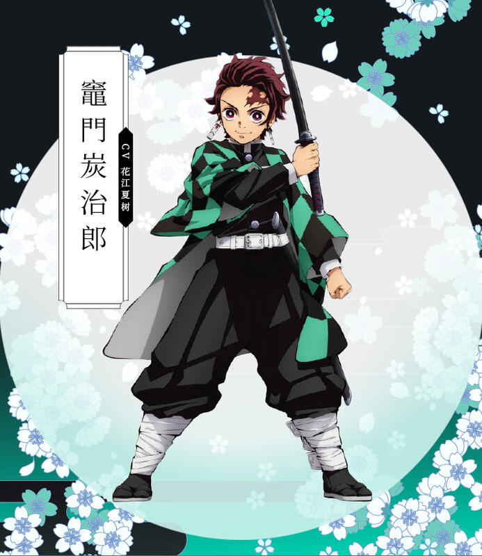
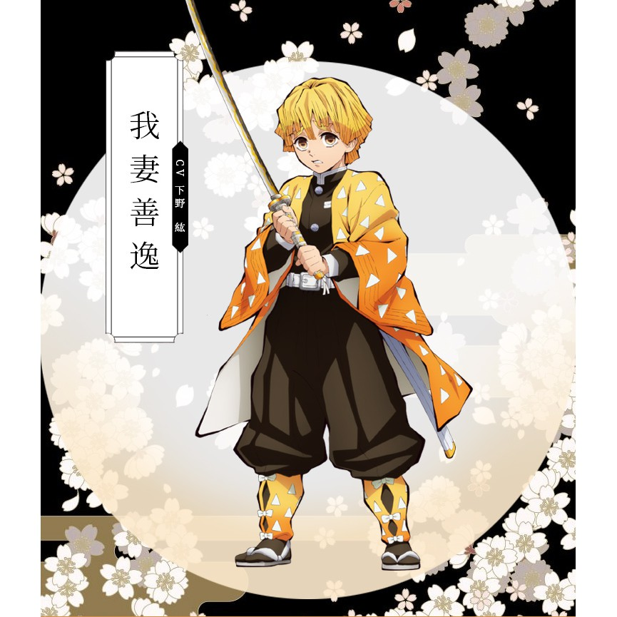

故事設定
平安時代罹患絕症的青年無慘，接受治療後誤以為療程沒效怒殺醫生，卻發現自己成為了「鬼」，雖具有超長壽命和強悍的身體能力，卻必須以人為食，且有受日曬會死亡及接觸紫藤花會中毒的弱點。無慘 希望找到醫生藥方的最後一味「青色彼岸花」完成治療克服陽光，便製造許多手下，強大的鬼可發動異能「血鬼術」。而後建立了「十二鬼月」，由旗下實力最強大的十二隻鬼組成，並分階級為「上弦」和「下弦」，強度分別按數字排列。
千年前與鬼舞辻無慘同一族的產屋敷家族，因爲出了無慘之孽種使全族遭咒，代代短命，後為了打倒無慘而組建了「鬼殺隊」。戰國時代鬼殺隊一度將無慘逼入絕境，可惜未成功。傳至大正時代由第97代產屋敷耀哉率領，成員有數百名劍士，使用「日輪刀」與鬼對戰，最高等級的稱為「柱」。卓越的劍士可以使用「呼吸法」，分為十餘種流派，使用後能讓身體能力大幅提升。所有呼吸法都是沿自於「日之呼吸」的分支。
劇情大綱
大正時代，竈門炭治郎繼承亡父留下的炭業工作，支撐一家七口，在山上過著樸實的生活。某日他做完生意返家後發現全家遭鬼王鬼舞辻無慘屠殺，而妹妹禰豆子變成了鬼。鬼殺隊富岡義勇見狀後本欲斬殺禰豆子，但他在見識到兄妹倆的親情後，推薦 炭治郎拜鱗瀧左近次為師。炭治郎經過兩年訓練，學會對抗鬼的呼吸法與劍術，通過考驗加入鬼殺隊。 炭治郎在接踵而來的任務中擊敗多個鬼，並首次接觸鬼的首領，也是殺害自己全家的元兇──活了千年的 無慘。炭治郎認識與無慘對立的鬼珠世，與她建立合作關係。在結識同伴我妻善逸和嘴平伊之助後，他們前去蜘蛛山支援與下弦之伍的對戰。炭治郎在苦戰之際使出祖傳的呼吸法「火之神神樂」，以及 禰豆子覺醒的血鬼術一度扭轉頹勢，最終在義勇助陣下取勝。 由於長期違反隊規帶著身為鬼的 禰豆子一同行動，炭治郎被押送往產屋敷耀哉的宅邸進行審判，他們被產屋敷認可。
炭治郎等人在恢復後接受特訓，後在於列車、花街、鑄刀師之村的多場戰鬥中與十二鬼月對上。儘管殺死多名十二鬼月成員，鬼殺隊也折損數人。在鑄刀師之村的戰鬥結束後，禰豆子克服了陽光，讓無慘將目標轉向禰豆子。無慘查出產屋敷宅邸的位置，造訪該處並企圖奪走 禰豆子，卻遭產屋敷以命相搏。在連串圍攻下， 無慘中了珠世會將鬼變回人類的毒，他便啟動手下的能力，將眾人關進鬼的根據地「無限城」中。
鬼殺隊成員和十二鬼月捉對廝殺，雙方死傷慘重。在消滅了所有十二鬼月後，無慘殺死珠世並擺脫她的牽制，復活後與鬼殺隊殘存兵力展開決戰，並展現出壓倒性的實力。炭治郎被無慘注入大量血液，瀕臨死亡之際見到自己的祖先炭吉觀摩繼國緣壹施展日之呼吸的景象，得知火之神神樂便是日之呼吸，同時領悟到擊敗 無慘的方法便是串聯日之呼吸的所有招式；另一方面， 無慘因珠事的毒而急速衰老弱化，又多次承受鬼殺隊的攻擊，後被黎明曙光逼上絕路。無慘一度奪取炭治郎的身體，但在禰豆子的感化和珠事珠嗜珠嗜珠誓珠仕珠釋珠適珠勢珠視珠室 珠世遺留的藥的作用下，炭治郎脫離掌控，變回人類。
無慘被消滅後，世上再無惡鬼，鬼殺隊也從此解散。炭治郎與夥伴們回鄉定居，他們的後代在現代日本過著和平美好的日子。
主要角色介紹
| 角色姓名 | 日文 | 角色說明 | 劇照 |
|---|---|---|---|
| 竈門炭治郎 | かまど たんじろう Kamado Tanjirou |
禰豆子的哥哥，水之呼吸和火之神神樂（即失傳的日之呼吸）的使用者。一名善良的少年，具有敏銳的嗅覺，能在與鬼的戰鬥中聞出破綻的氣味。為了將變成鬼的妹妹變回人類、並為死去的家人報仇，加入了專門狩獵惡鬼的組織「鬼殺隊」。 |  |
| 竈門禰豆子 | かまど ねずこ Kamado Nezuko |
在與其他家人一同被鬼襲擊時，因為傷口沾染鬼舞辻無慘的血液，於瀕死之際被變化成鬼，總是在危難時保護 炭治郎，並與其他人行動。平時總在 炭治郎背上的木箱內睡覺，體型能自由變化。能使用血鬼術「爆血」。在成為鬼之前，她是個時時心念家人的溫柔女孩。 |  |
| 我妻善逸 | あがつま ぜんいつ Agatsuma Zenitsu |
炭治郎>同期的鬼殺隊士。雷之呼吸的使用者。自己極度沒有自信，常常說出自嘲的發言。擁有極佳聽覺，能分別出鬼和人類的聲音。極度恐懼時會陷入沉睡，並激發出強勁的實力。尤其喜歡女性，對 禰豆子有好感。 |  |